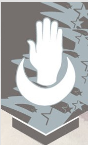
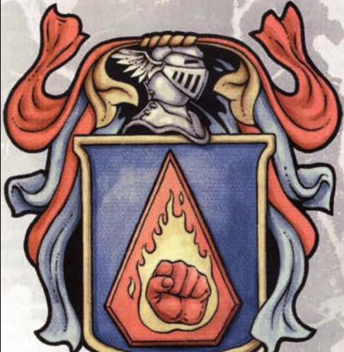
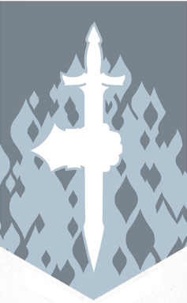

Factions
Factions
den 17 mars 2024
13:29
Arcane Brotherhood
Alignment: Lawful Good
Leader: Lord Dahrius of the Light formerly known as Dahrius the Red
Key Members: Balasar The Story Teller, Orryn The Chaos, Riko The Black, Thorym The Blue
Location: Luskan
Symbol:

The Arcane Brotherhood was first formed a long time ago as a vanguard for the Sword Coast and it's people against evil out there. It was a esteemed brotherhood of mages and witches of the arcane arts that protected the realms from dangers like dragons and fiends. However with the betrayal of Haddar turning on Mordenkainen and the eight the previous esteemed faction fell to corruption and was less focused on protecting the realm and more so of protecting the city of Luskan. The city of Luskan is governed by noble houses that are reffered to as ships and is metaphorical term for the trade empires that they run across the sword coast as they don't only act inside the city but also outside it's city wall. With the Fall of Tiamat the Brotherhood is being restructured and rebuilt to it's former glory under the watchful eye of the king and his loyal close friends.
Clan Battlehammer-Hill Dwarves-Rulers of Mithral Hall
Alignment: Lawful Good
Leaders:
Key Members:
Location:
Clan Blackbanner-Mountain Dwarves
Alignment: Chaotic Good
Leaders:
Key Members:
Location:
Clan Bucklebear-Gold Dwarves
Alignment: Neutral Good
Leaders:
Key Members:
Location:
Clan Foehammer-Mountain Dwarves
Alignment: Lawful Good
Leaders:
Key Members:
Location:
Clan Horn-Hill Dwarves
Alignment: Lawful Good
Leaders:
Key Members:
Location:
Clan Stoneshield-Shield Dwarves
Alignment: Lawful Good
Leaders:
Key Members:
Location:
Collage of Fochlucan
Collage of New Olamn
Collage of The Herald
Emerald Enclave
Alignment: Neutral Good
Leader:
Key Members: Rimi Wildclaw
Location: Any Major City inside the Sword Coast and some outposts in major forests.
Symbol:

The Emerald Conclave is a group of Druids, Rangers and nature loving people regarding class who work in unison to protect the smaller urban settlements across the sword coast. The focus in the protection of nature and the natural balance regardless of the origin and thus works sometimes against the law if it happens to be corrupt.
Force Gray
Alignment: Mixed
Leader: Blackstaff
Key Members:
Location: Waterdeep
Symbol:

The guild of Force Gray is a independant adventurer guild stationed in the city of Waterdeep. What sets it apart from the traditional guild is that they only allow spell casters to be able to join the guild with no exceptions. Graduates who wishes to adventure and dreams of things outside the schollar or serving the land often wishes to join this faction as it is highly sought after. At first the guild in it's younger days the guild only accepted spell casters of the arcane nature but in later days have accepted other classes like Druids and Clerics as well to join their ranks. In order to join you first have to undergo some tests to prove that you are an actuall spellcasting class of enough stature in order to be accepted as mearly having some spells from being a tiefling or having some items or being magic adept is not enough to get in.
The Flaming Fist
Alignment: Lawful Good
Leader:
Key Members:
Location: Baldurs Gate
Symbol:

For the longest time maybe even from the founding of Baldurs Gate the city have opted not to rely on the unified military of the sword coast and instead chosen it's own military system. The guards and military of Baldurs Gate is as much as a guild as it is an army with the benefits of being acting guards inside the city of Baldurs Gate. They accept any and all classes as long as you are good hearted and not thwarted by the usual illegality that most adventurers pocess. Only the truly lawful is allowed to be a member of the flaming fist and joining is even stricted than joining any other guilds. Joining is also not something you do a whim and can take years to be accepted into the folds of the guild. However once you are a member you are a member for life and will be one of the many proud soldiers of the Flaming Fist.
Harpers
Alignment: Mixed
Leader: Unknown (Kai)
Key Members: Vellaia
Location: Any Major City inside the Sword Coast
Symbol:

The USA has the CIA, Russia has the KGB and Sweden has their Special Defence Unit.
Any great nation requires it's own specialy trained agents who are willing to defend their world against foreign and internal threats and thus the harpers were created. Just like the previous mentioned it is a well known faction across the sword coast and to treat the harpers as mere spies is an understatement. Unlike the previously mentioned the harpers does not work according to poitic and does not have an allegience to any nation. They work as spies, soldiers and adventurers to defeat evil wherever it works and is the more traditional adventurers group in that they accept any and all classes no matter what your past may have been as long you are working for the greater good. Because of this though and the fact that members are treated as spies the general fold in Faehrun do not trust the harpers and is seldom inclined to shair their information with members. A harper never neads to tell anybody that they are a member to get what they need is a common phrace inside of the faction.
Knights of the Order
Alignment: Lawful Good
Leaders:
Key Members:
Location: Waterdeep
Knights of the Unicorn
Alignment: Lawful Good
Leaders:
Key Members:
Location: Baldurs Gate
Knights of the Silver Chalice
Alignment: Lawful Good
Leader: Cerneus Alathar
Key Members:Verdh, Madison Silverhand
Location: Silverymoon and Neverwinter
Lords Alliance
Alignment: Mixed
Leaders: A council of nobolity across the Sword Coast
Key Members: Baldritch and Queen Esseren
Location: Any Major City inside the Sword Coast
Symbol:

The Lords alliance is and was the goverment of the sword coast for the longest of times. It is a faction made and formed by various nobility in the Sword Coast that are spread through out the land. Once a year they have a meeting where they discuss current affairs and they always work in the betterment of the sword coast. Every decision they made is made through vote and has a democratic system in place so that no city or place will be favored over another. They are the founders of the Unified military of the sword coast and work together in times of war to fight foreign nations. In peace time they work as sponsors for adventuring parties that go and do quests for the various nobles when dangerous threats are around. For example a noble could come to the faction and tell them about a close by beholder taking his citizens. The faction then make a quests for it that then adventurers pickup and gets a reward from. The reward is either given by the nobility himself or the faction as payment for the service. The reason that the faction is willing to pay is because a danger to one part of the sword coast could later become a problem to the realm. However most nobility pay the reward themselves cause when you have gathering of nobilities in a faction who are all looking for self interest it becomes political game and every time there is a unified kingdom it rocks this boat.
Many of the members inside the faction is against having a monarchy as it disrupts their trade and the faction.
Order of the flying Skull
Alignment: Evil
Leader: Captain Barbos
Key members: pirates on the Sea of the Fallen Stars
Honoreble members: Blackbeard,
Location: Sea of Fallen Stars
Symbol:
Order of the Gauntlet
Alignment: Lawful Good
Leader:
Key Members: Keely
Location: Any Major City inside the Sword Coast
Symbol:

The order of the gauntlet is best described as a knightly brotherhood. They are sworn protector of the realm and is specilised in fighting against undeads and fiends. As part of joining the order you swore an oath much like a paladin would but do not have to be a paladin to become a member. The order accept all classes to join their fault but mostly consists of Paladins, Fighters and Clerics. Much like knights they patrol the sword coast and travels from place to place. They even at times have knigtly duels against each other in order to increase in rank or prove their worth and valor inside the order. Unlike a knightly faction they must not ride horses nor wear plate armours and is free to do as they please when they are free. When they are not free they are ordered by a superior much like inside an army of what to do next and where to go. At times of war and turmoil and conflict they are recruited by the lord's alliance or the king to help. During times of monarchy it is tradition for the leader of the faction to swar allegience to the crown as the guild works independantly from the lord's alliance and is known to have a ongoing rivalry with the comfy snobs as the members call them.
Talon/Softclaw
Alignment: Chaotic Good
Leader: Unknown (The Steel Dragon Zundaerazylym-Also known as the Laughing Wyrm or the Smiling Mistress/Lady)
Key Members: Eric Dagger-The Director-Code Name-Talon
Location: Unknown (Neverwinter)
Symbol: A dragons claw
Talon is a faction of very strong solo adventurers that works to create peace among dragons. Their objective does not include evil dragons as they actively work aginast their objective. The faction also works very much in secret and is acutally called Softclaw in actuallity. Talon is the guild they go and mention to outsiders to identify themselves. Even it's own members does not know the factiosn true name and it is designed this way for the factions own safety. What the members do is very dangerous work as they are in fact dealing with dragons and this includes ancient dragons that they interact with.
The highest members act directly with Ophala as their acting faction leader with only one excpetion who knows the true identity of the actual guild leader. Ophala has named him second as he and her mate works as a pair and couple alone to achieve their goals. The director as he is referred as is working on alternative ways to deal with the factions issues and works independandtly in his own way to achieve the laughin wyrms dream as he to share this dream.
The Nine
Alignment: Mixed
Leader: None
Key Members: Ezekel, Melisandra, Riko Blackburn, Tristan
Location: Unknown
Symbol: A star with nine points
It's been almost a thousand years since the times of the eight with their legendary tales from Greyhawk, Dragon Lance and interplanar travles that Mordenkainen and his group of adventurers have done such a long time ago. Now though the previous members is but a memory and some of the key members of the old members are gone. Mordenkainen is in Borovia driven mad, Bigby is traveling that astral plane with some survivors, Tenzer has gone missing, Fristandia is somewhere inside or outside Candlekeep and who knows about the rest. Thus new members have formed and making it nine members in total. The group of spell casters comes together in times of great threats to the world to stop the end of everything. However in late times there have been no such threats and thus the members are minding their own business.
The Zentharim
Alignment: Lawful Evil
Leader:
Key Members:
Location:
Symbol:
Tribes of Uthgardt
Alignment: Neutral
Tribes: Blue Bear, Black Lion, Red Tiger, Sky Pony, Tree Ghost, Great Worm, Black Raven, Elk, Red Pony, Golden Eagle
Leaders:
Key Members:
Location:
Symbol:
Sons of Alagondar
Alignment: Chaotic Good
Leader:
Key Members:
Location:
Symbol: